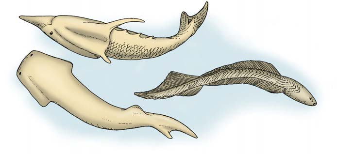

21 El origen e historia evolutiva de la vida
446
CONCEPTOS CLAVE
21.1 Aunque no hay evidencia fósil directa del origen de la vida, experimentos bioquímicos han demostrado cómo pudieron formarse las complejas moléculas orgánicas que se encuentran en todos los organismos vivientes. 21.2 Es probable que las primeras células fueran heterótrofas, anaerobias y procariotas. La fotosíntesis, la respiración aerobia y la estructura celular eucariotas representan varios grandes avances que ocurrieron durante la historia temprana de la vida. 21.3 El registro fósil dice mucho de lo que se sabe acerca de la historia de la vida, como qué tipos de organismos existieron y dónde y cuándo vivieron. Los científi cos identifi can y demuestran las relaciones entre fósiles en capas de roca de diferentes períodos del tiempo geológico.
L
os tres capítulos anteriores se ocuparon de la evolución biológica. Sin embargo, no trataron mucho acerca de una pregunta fundamental: ¿cómo comenzó la vida? Aunque los biólogos por lo general aceptan la hipótesis de que la vida se desarrolló a partir de materia no viva, no hay certeza exacta de cómo ocurrió este proceso, llamado evolución química . Los modelos actuales sugieren que primero se formaron espontáneamente pequeñas moléculas y que se acumularon a lo largo del tiempo. Después, a partir de las moléculas más pequeñas, pudieron ensamblarse macromoléculas orgánicas más grandes, como las proteínas y los ácidos nucleicos. Las macromoléculas interactuaron, se combinaron en estructuras más complicadas que a la larga tuvieron metabolismo y pudieron replicarse, y transmitieron su información genética a sus descendientes, que con el tiempo se convirtieron en las primeras células verdaderas. Después de originarse las primeras células, divergieron a lo largo de varios miles de millones de años hacia la rica diversidad biológica que caracteriza al planeta en la actualidad. Inicialmente predominaban los procariotas unicelulares (arqueas y bacterias), seguidos por eucariotas unicelulares. Los primeros eucariotas multicelulares fueron animales marinos de cuerpo blando que no dejaron
Fósil de un reptil del Pérmico temprano. Este fósil bien preservado de Orobates pabsti fue relacionado con las huellas fósiles bien conservadas que se encontraron cerca de él. Aunque las extremidades se extendieron al momento de la muerte, el Orobates caminaba con sus extremidades en sentido vertical bajo el cuerpo. Descubierto y fotografi ado en Alemania.
© Phil Degginger/Carnegie Museum/Alamy
El origen e historia evolutiva de la vida 447
muchos fósiles. A continuación aparecieron los animales con concha y otros invertebrados marinos (animales sin columna vertebral), ejemplos de ellos son los trilobites, primitivos artrópodos acuáticos. A los invertebrados marinos les siguieron los primeros vertebrados (animales con columna vertebral). Los primeros peces con mandíbulas aparecieron y se diversifi caron. Algunos de éstos dieron origen a los anfi bios, los primeros vertebrados con extremidades que eran capaces de moverse sobre la tierra. Los anfi bios dieron origen a los reptiles, que se diversifi caron y poblaron la tierra (vea la fotografía). Los reptiles, a su vez, originaron independientemente a aves y mamíferos. Las plantas experimentaron una historia evolutiva y diversifi cación similares. En este capítulo se sondea la vida a lo largo de un gran lapso de tiempo, a partir de cuando el planeta era relativamente joven. Primero se examinan los modelos propuestos acerca de cómo comenzó la vida y luego se rastrea la larga historia evolutiva de la vida.
21.1 EVOLUCIÓN QUÍMICA DE LA TIERRA PRIMIGENIA
OBJETIVOS DE APRENDIZAJE
1 Describir las condiciones que los científi cos consideran existieron en la Tierra primigenia. 2 Contrastar la hipótesis de la sopa prebiótica con la hipótesis del mundo de hierro-azufre.
Por lo general, los científi cos están de acuerdo en que los comienzos de la vida ocurrieron en condiciones ambientales muy diferentes a las de la
actualidad. Por tanto, es necesario examinar las condiciones de la Tierra temprana para entender el origen de la vida. La evidencia de muchas fuentes proporciona pistas que ayudan a formular escenarios posibles de las etapas en las que se originó la vida. Su estudio es un área activa de la investigación científi ca actual y muchas aportaciones importantes se agregan a la comprensión de cómo comenzó la vida. Astrofísicos y geólogos estiman que la Tierra tiene cerca de 4600 millones de años de antigüedad. Tal parece que la atmósfera de la Tierra primigenia incluía dióxido de carbono (CO 2 ), vapor de agua (H 2 O), monóxido de carbono (CO) y nitrógeno (N 2 ). Quizá también contenía algo de amoniaco (NH 3 ), ácido sulfh ídrico (H 2 S) y metano (CH 4 ), aunque es muy posible que la radiación ultravioleta del Sol haya descompuesto estas moléculas muy rápido. Probablemente la atmósfera primigenia contenía poco o nada de oxígeno libre (O 2 ). Para la evolución química de la vida debieron existir cuatro requisitos: poco o nada de oxígeno libre, una fuente de energía, la disponibilidad de bloques de construcción químicos y tiempo. Primero, la vida pudo comenzar sólo en ausencia de oxígeno libre. El oxígeno es muy reactivo y habría oxidado las moléculas orgánicas que son los bloques de construcción necesarios en el origen de la vida. Con toda probabilidad la atmósfera temprana de la Tierra era fuertemente reductora, lo que signifi ca que cualquier oxígeno libre habría reaccionado con otros elementos para formar óxidos. En consecuencia, el oxígeno se habría ligado en compuestos. El origen de la vida también requería energía para realizar el trabajo de construir moléculas biológicas a partir de químicos orgánicos simples. La Tierra primitiva era un lugar de alta energía con violentas tormentas, extensa actividad volcánica, bombardeo de meteoritos y otros objetos extraterrestres, y radiación intensa, incluida radiación ultravioleta del Sol ( FIGURA 21-1 ). El joven Sol probablemente producía
Radiación cósmica y ultravioleta
Materias primas de los meteoritos
Materias primas de los volcanes
Materias primas de respiraderos térmicos en las profundidades marinas
Energía de relámpagos
Océano
Tierra
FIGURA 21-1 Condiciones en la Tierra primigenia Las erupciones volcánicas, que escupían gases que contribuyeron a la atmósfera, y violentas tormentas activaron lluvias torrenciales que deslavaron moléculas de la atmósfera y erosionaron la tierra. Los meteoritos y otros objetos extraterrestres bombardearon la Tierra, y cambiaron de manera cataclísmica la corteza, los océanos y la atmósfera. Los respiraderos térmicos en la profundidad de los océanos, calentados por el calor interno de la Tierra, expulsaban sustancias químicas. Radiación de alta energía proveniente de rayos cósmicos y ultravioletas caían en ráfagas sobre el planeta.
448 Capítulo 21
Las moléculas orgánicas pudieron haberse formado en respiraderos hidrotérmicos
Algunos biólogos plantean la hipótesis de que las polimerizaciones tempranas que condujeron al origen de la vida ocurrieron en grietas del suelo en el fondo marino, de donde salía agua caliente, monóxido de carbono y minerales como sulfuros de hierro y níquel: la hipótesis del mundo de
más radiación ultravioleta que en la actualidad y la Tierra primitiva no tenía capa de ozono protectora para fi ltrarla. Un tercer requisito sería la presencia de los bloques de construcción químicos necesarios para la evolución química. En ellos se incluyen agua, minerales inorgánicos disueltos (presentes como iones) y los gases presentes en la atmósfera temprana. Un requisito fi nal para el origen de la vida era tiempo para que las moléculas se acumularan y reaccionaran entre sí. La Tierra tiene una edad aproximada de 4600 millones de años y la evidencia sugiere que la vida surgió temprano en la historia del planeta.
En la Tierra primitiva se formaron las moléculas orgánicas
Puesto que las moléculas orgánicas son los materiales de construcción para los organismos, es razonable considerar primero cómo se originaron. Dos modelos principales buscan explicar cómo se originaron los precursores orgánicos de la vida: la hipótesis de la sopa prebiótica propone que dichas moléculas se formaron cerca de la superfi cie de la Tierra, mientras que la hipótesis del mundo de hierro-azufre propone que los precursores orgánicos se formaron en grietas en el lecho marino.
Las moléculas orgánicas pudieron haberse formado en la superfi cie de la Tierra
El concepto de que las moléculas orgánicas simples (como azúcares, bases de nucleótidos y aminoácidos) pudieron formarse de manera espontánea a partir de materias primas más simples, lo propusieron por primera vez, en la década de 1920, dos científi cos que trabajaban de manera independiente: A. I. Oparin, bioquímico ruso, y J. B. S. Haldane, fi siólogo y genetista escocés. Su hipótesis fue puesta a prueba en la década de 1950 por los bioquímicos estadounidenses Stanley Miller y Harold Urey, quienes diseñaron un aparato cerrado que simuló las condiciones que presumiblemente existían en la Tierra primigenia ( FIGURA 21-2 ). Expusieron una atmósfera rica en H 2 , CH 4 , H 2 O y NH 3 a una descarga eléctrica que simuló los relámpagos. Su análisis de los químicos producidos durante una semana reveló la formación de aminoácidos y otras moléculas orgánicas. Aunque datos más recientes sugieren que la atmósfera temprana de la Tierra no era rica en metano, amoniaco o hidrógeno, experimentos similares con diferentes combinaciones de gases produjeron gran variedad de moléculas orgánicas que son importantes en los organismos contemporáneos. Esto incluye los 20 aminoácidos, varios azúcares, lípidos, las bases nucleótidas de ARN y ADN, y ATP (cuando hay fosfato presente). Por ende, antes de que comenzara la vida, sus bloques de construcción químicos quizá se acumularon como un paso necesario en la evolución química. Oparin imaginó que las moléculas orgánicas, a lo largo de grandes lapsos de tiempo, se acumularían en los mares poco profundos para formar un “mar de sopa orgánica”. Imaginó que las moléculas orgánicas más pequeñas (monómeros) se combinaban para formar otras más grandes (polímeros) en tales condiciones. La evidencia recolectada desde la época de Oparin indica que quizá se formaron polímeros orgánicos y se acumularon en superfi cies de roca o arcilla en lugar de en los mares primordiales. La arcilla, que consiste de partículas microscópicas de roca expuesta, es particularmente intrigante como posible sitio de las polimerizaciones tempranas, porque enlaza monómeros orgánicos y contiene iones de zinc y hierro que pueden servir como catalizadores. Experimentos de laboratorio han confi rmado que los polímeros orgánicos se forman de manera espontánea a partir de monómeros en superfi cies de roca o arcilla calientes.
EXPERIMENTO CLAVE
PREGUNTA: ¿Pudieron formarse moléculas orgánicas en las condiciones de la Tierra primigenia?
HIPÓTESIS: Pueden formarse moléculas orgánicas en una atmósfera reductora similar a la que se cree estaba presente en la Tierra primitiva.
EXPERIMENTO: El aparato que usaron Miller y Urey para simular la atmósfera reductora de la Tierra primitiva contenía hidrógeno, metano, amoniaco y agua. En el matraz arriba a la derecha se produjo una chispa eléctrica para simular relámpagos.
Cámara de ebullición para gases y agua
Gases de entrada
Fuente de calor Moléculas orgánicas recolectadas en el separador
Condensador
A vacío
Electrodos
Cámara de chispas
CH 4
NH 3
H 2 H 2 O
RESULTADOS Y CONCLUSIÓN: Los gases presentes en el matraz reaccionaron en conjunto y en una semana varios compuestos orgánicos simples, como aminoácidos, se separaron en el fondo del tubo colector. Por ende, la formación de moléculas orgánicas, el primer paso en el origen de la vida, puede ocurrir a partir de precursores simples.
Fuente: Miller, S. L. y H. C. Urey. “Organic Compound Synthesis on the Primitive Earth”. Science, vol. 130, julio de 1959.
FIGURA 21-2 Animada Experimento de Miller y Urey acerca de la evolución química
El origen e historia evolutiva de la vida 449
células. Las microesferas también pueden absorber materiales de sus alrededores (permeabilidad selectiva) y responder a cambios en la presión osmótica como si estuvieran cubiertas por membranas, aun cuando no contengan lípido. En 2008, los científi cos construyeron protobiontes en los que las membranas de los ácidos grasos y monoglicéridos rodeaban moléculas más grandes parecidas a ADN. Dichos protobiontes son impermeables a las moléculas genéticas, pero permiten la entrada de moléculas orgánicas más pequeñas; es decir, “nutrientes”. Este estudio es signifi cativo porque sugiere cómo las primeras células pudieron mantener sus “genes” y absorber los nutrientes necesarios de su ambiente sin la avanzada estructura membranosa asociada con las células contemporáneas. El estudio de los protobiontes muestra que estructuras no vivientes relativamente simples tienen algunas de las propiedades de la vida. Sin embargo, es un gran paso (o muchos pasos) ir desde los agregados moleculares simples como los protobiontes hasta las células vivientes.
El origen de un metabolismo simple dentro de una frontera membranosa pudo ocurrir temprano en la evolución de las células
Aunque el lector aprendió muchas cosas acerca de cómo pudieron formarse las moléculas orgánicas en la Tierra primitiva, el problema de cómo evolucionaron las precélulas en células vivientes sigue sin resolverse. Examine un posible escenario (la hipótesis del primer metabolismo ) que apoyan el químico Robert Shapiro, de la Universidad de Nueva York, y muchos otros. Shapiro plantea que la vida comienza como un sistema autosustentable organizado que consiste de reacciones químicas entre moléculas simples encerradas dentro de una frontera; esto es, separadas del ambiente externo ( FIGURA 21-4a ). Una fuente de energía debe estar disponible para impulsar dichas reacciones químicas (y en consecuencia mantener una organización interna diferente del ambiente externo). Para ser autosustentable, la fuente de energía debe estar acoplada con la secuencia de reacciones químicas ( FIGURA 21-4b ). (Recuerde cómo el ATP liga reacciones exergónicas y endergónicas, como se muestra en la fi gura 7-6).
hierro-azufre. Tales respiraderos hidrotérmicos habrían estado mejor protegidos de los efectos catastrófi cos del bombardeo de meteoritos que la superfi cie de la Tierra. En la actualidad, estos manantiales térmicos anaeróbicos producen precursores de moléculas biológicas y de “alimento” rico en energía, incluidos los compuestos altamente reducidos de ácido sulfh ídrico y metano. Estos químicos dan sostén a una diversa comunidad de microorganismos, almejas, cangrejos, gusanos tubícolas y otros animales (vea Preguntas acerca de: Vida sin el Sol , en el capítulo 55). La comprobación de la hipótesis del mundo de hierro-azufre en los respiraderos hidrotérmicos es difícil, pero experimentos de laboratorio que simulan las altas presiones y temperaturas que predominan en dichos lugares producen resultados intrigantes. Por ejemplo, los sulfuros de hierro y níquel catalizan reacciones entre monóxido de carbono y ácido sulfúrico, lo que produce ácido acético y otros compuestos orgánicos simples. Además, los experimentos muestran que el amoniaco, uno de los precursores de proteínas y ácidos nucleicos, se produce en abundancia, lo que sugiere que los respiraderos eran ambientes ricos en amoniaco en el mundo prebiótico y que los primeros organismos pudieron formarse en este ambiente aparentemente inhóspito.
Repaso
■ ¿Cuáles son los cuatro requisitos para la evolución química y por qué es esencial cada uno de ellos?
■ ¿Cuál es la hipótesis de la sopa prebiótica?
■ ¿En qué difi ere la hipótesis del mundo de hierro-azufre de la hipótesis de la sopa prebiótica?
21.2 LAS PRIMERAS CÉLULAS
OBJETIVOS DE APRENDIZAJE
3 Destacar los principales pasos que se considera ocurrieron en el origen de las células. 4 Explicar cómo la evolución de los autótrofos fotosintéticos afectó tanto a la atmósfera como a otros organismos. 5 Describir la hipótesis de la endosimbiosis en serie.
Después de la formación de los primeros polímeros, ¿pudieron ensamblarse de manera espontánea en estructuras más complejas con una frontera membranosa exterior? Los científi cos han sintetizado varios protobiontes diferentes, que son ensambles parecidos a vesículas de polímeros orgánicos producidos abióticamente; es decir, no producidos por organismos. Estos protobiontes se asemejan a células vivientes en muchas formas y en consecuencia ofrecen pistas acerca de cómo el agregado de moléculas no vivientes complejas dieron ese “gran salto” y se convirtieron en células vivientes. Dichos protobiontes presentan muchos atributos funcionales y estructurales de las células vivientes. Con frecuencia se dividen a la mitad (fi sión binaria) después de haber “crecido” lo sufi ciente. Los protobiontes mantienen un ambiente químico interno que es diferente del ambiente externo (homeostasis) y algunos de ellos muestran principios de metabolismo (actividad catalítica). Están muy organizados, si se considera su composición relativamente simple. Las microesferas son un tipo de protobiontes formadas al agregar agua a polipéptidos formados de manera abiótica ( FIGURA 21-3 ). Algunas microesferas son excitables: producen un potencial eléctrico a través de su superfi cie, lo que recuerda los gradientes electroquímicos en las
2 μ m
Steven Brooke and Richard LeDuc
FIGURA 21-3 Microesferas Estos diminutos protobiontes muestran algunas de las propiedades de la vida.
450 Capítulo 21
Conforme las precélulas siguen evolucionando, su organización aumenta ( FIGURA 21-4c ). Finalmente, para sobrevivir, el sistema precelular debe crecer y reproducirse. Una de las partes más signifi cativas del origen de las células vivientes a partir de las precélulas fue la evolución de la reproducción molecular ( FIGURA 21-4d ).
La reproducción molecular fue un paso crucial en el origen de las células
En las células vivientes la información genética se almacena en el ácido nucleico ADN, que se transcribe en ARN mensajero (ARNm), que a su vez se traduce en la secuencia de aminoácidos adecuada en las proteínas. Las tres macromoléculas en la secuencia de proteínas ADN ¡ ARN ¡ proteína contienen información precisa. De éstas, sólo el ADN y el ARN son capaces de autorreplicación (aunque sólo en presencia de las enzimas adecuadas en las células actuales). Puesto que el ARN y el ADN pueden formarse espontáneamente en arcilla en una forma muy parecida a como otros polímeros orgánicos lo hacen, la pregunta es: ¿cuál molécula, ADN o ARN, apareció primero en el mundo prebiótico? Muchos científi cos sugieren que el ARN fue la primera molécula de información en evolucionar en la progresión hacia una célula autosustentable y autorreproducible, y que las proteínas y el ADN llegaron más tarde. De acuerdo con un modelo conocido como el mundo del ARN , la química de la Tierra prebiótica dio origen a moléculas de ARN autorreplicantes que funcionaban como enzimas y sustratos para su propia replicación. La replicación del ARN en el escenario del mundo del ARN se representa con una fl echa circular:
ARN
Con frecuencia, el ARN tiene propiedades catalizadoras; tal ARN enzimático se llama ribozima . Antes de la evolución de las células verdaderas, las ribozimas pudieron catalizar su propia replicación en las arcillas, estanques de roca poco profundos o respiraderos hidrotérmicos donde se originó la vida. Cuando hebras de ARN se agregan a un tubo de ensayo que contiene nucleótidos de ARN pero no enzimas, los nucleótidos se combinan para formar moléculas de ARN cortas. La existencia de un mundo de ARN temprano en la historia de la vida nunca pudo probarse, pero experimentos con evolución in vitro , también llamados evolución dirigida , han demostrado que es factible. Estos experimentos abordan una pregunta importante acerca del mundo de ARN, a saber: ¿moléculas de ARN pudieron catalizar las muchas y diferentes reacciones químicas necesarias para la vida? En la evolución dirigida se mezcla un gran conjunto de moléculas de ARN con diferentes secuencias y las moléculas se seleccionan por su capacidad para catalizar una reacción individual con importancia biológica ( FIGURA 21-5 ). Los investigadores seleccionan aquellas moléculas que tienen al menos alguna capacidad catalizadora y luego las amplifi can en muchas copias. Los investigadores usan ciertos químicos para causar mutaciones y luego exponer las moléculas a otra ronda de selección. Después de repetir este ciclo varias veces, al fi nal del proceso de selección las moléculas de ARN funcionan efi cientemente como catalizadores para la reacción. Los estudios de evolución in vitro demostraron que el ARN tiene un gran repertorio funcional; esto es, el ARN puede catalizar variadas reacciones con importancia biológica. Los biólogos plantean la hipótesis de que, en el mundo de ARN, las ribozimas inicialmente catalizaban síntesis de proteínas y otras importantes reacciones biológicas; sólo más tarde las enzimas proteicas catalizaron dichas reacciones.
Dentro de una frontera membranosa ocurren reacciones químicas entre moléculas simples.
Una fuente de energía se acopla a la secuencia de reacciones químicas.
Conforme el sistema precelular continúa evolucionando, su tamaño y organización aumentan.
El sistema precelular desarrolla la capacidad para reproducirse.
FIGURA 21-4 Origen de la vida: el escenario del primer metabolismo
El origen e historia evolutiva de la vida 451
una sola hebra se pliegan sobre sí mismas como resultado de interacciones entre los nucleótidos que componen la hebra de ARN. En ocasiones la conformación (forma) de la molécula de ARN plegada es tal que se enlaza débilmente a un aminoácido (vea la discusión de la peptidil transferasa en el capítulo 13). Los aminoácidos se mantienen unidos entre sí mediante enlaces de moléculas de ARN y forman un polipéptido. Ya se consideró cómo la evolución de las moléculas informativas pudo originar el ARN y más tarde las proteínas. Si un ARN autorreplicante capaz de codifi car proteínas apareció antes que el ADN, ¿cómo se involucró el ADN, la molécula universal de la herencia en las células? Acaso el ARN realizó copias de doble hebra de sí mismo que a la larga evolucionaron en ADN.
ADN — ARN ¡ proteína
La incorporación de ADN en el sistema de transferencia de información fue ventajosa, porque la doble hélice de ADN es más estable (menos reactiva) que la hebra única de ARN. Dicha estabilidad en una molécula que almacena información genética proporcionaría una ventaja decisiva en el mundo prebiótico (como lo hace en la actualidad). En consecuencia, en el mundo de ADN/ARN/proteína, el ADN se convirtió en la molécula de almacenamiento de información, el ARN siguió involucrado en la síntesis de proteína y las enzimas proteicas catalizaron la mayoría de las reacciones celulares, incluida la replicación del ADN y la síntesis de ARN.
ADN S ARN S proteína
El ARN todavía es un componente necesario del sistema de transferencia de información, porque el ADN no es catalizador. Por ende, la selección natural en el ámbito molecular favoreció la secuencia de información ADN ¡ ARN ¡ proteína. Una vez que el ADN se incorporó en esta secuencia, las moléculas de ARN asumieron su papel actual como intermediarias en la transferencia de información genética. Tuvieron que ocurrir varias etapas adicionales antes de que una célula verdadera pudiera evolucionar a partir de agregados macromoleculares. Por ejemplo, el código genético autorreplicante debió surgir extremadamente temprano en el mundo prebiótico porque todos los organismos lo poseen, ¿pero cómo se originó? Además, ¿cómo evolucionó una membrana encapsuladora de lípido y proteína? Este tipo de preguntas siguen en pie para la labor de los científi cos.
La evolución biológica comenzó con las primeras células
Nadie sabe con certeza cuándo o dónde aparecieron las primeras células sobre la Tierra. ¿Vivieron en respiraderos hidrotérmicos o en la superfi cie de la Tierra? ¿Eran bacterias? No es posible responder estas preguntas, en parte porque no existen fósiles que tracen la transición desde lo no vivo a lo vivo. La evidencia no fósil, “huellas digitales” isotópicas de carbono orgánico en rocas antiguas de Groenlandia, sugieren a algunos investigadores que la vida existió tan temprano como hace 3800 millones de años. Sin embargo, otros científi cos debaten vigorosamente esta conclusión. Los microfósiles , restos antiguos de vida microscópica, sugieren que las células pudieron proliferar hace 3500 millones de años. Ricos depósitos de microfósiles parecen existir en las rocas Pilbara del noroeste australiano y en las rocas Barberton en Sudáfrica; estos dos depósitos tienen aproximadamente de 3300 millones a 3500 millones de años de antigüedad. Sin embargo, algunos científi cos desafían la interpretación de los “garabatos” más antiguos ricos en carbono que se encuentran en
S proteína ARN
Es interesante que en experimentos con tubos de ensayo han evolucionado moléculas de ARN que dirigen la síntesis de proteínas al catalizar la formación de enlaces peptídicos. Algunas moléculas de ARN de
EXPERIMENTO CLAVE
PREGUNTA: ¿La selección natural in vitro puede resultar en evolución química de catalizadores?
HIPÓTESIS: Moléculas de ARN autorreplicantes pueden experimentar cambios que las conviertan en catalizadores más efi cientes.
EXPERIMENTO: Se seleccionaron moléculas de ARN de un gran conjunto, con base en su capacidad para catalizar una reacción específi ca, luego se amplifi caron y mutaron ( vea la fi gura ). Este proceso se repitió de 7 a 20 veces más.
Gran conjunto de moléculas de ARN
Selección por su capacidad para catalizar una reacción química
Moléculas con alguna capacidad para catalizar la reacción
Moléculas con mejor capacidad para catalizar la reacción
Amplificación y mutación para crear grandes conjuntos de moléculas de ARN similares
Repetición del proceso selección
amplificación mutación
RESULTADOS Y CONCLUSIÓN: El grupo fi nal de moléculas de ARN es el que cataliza con más efi ciencia la reacción química para la que se seleccionó. Los científi cos han desarrollado más de dos docenas de catalizadores de ARN sintéticos mediante evolución in vitro.
FIGURA 21-5 Evolución in vitro de moléculas de ARN
452 Capítulo 21
Cuando el suministro de moléculas orgánicas generadas de manera espontánea declinó de manera gradual, sólo ciertos organismos pudieron sobrevivir. Quizá ya habían ocurrido mutaciones que permitieron a algunas células obtener energía directamente de la luz solar, quizás para elaborar ATP. Dichas células, que no requerían los compuestos orgánicos ricos en energía que en ese momento escaseaban en el ambiente, tuvieron una ventaja selectiva distinta. La fotosíntesis necesita tanto energía luminosa como una fuente de electrones, que se usan para reducir el CO 2 para formar moléculas orgánicas como la glucosa. (Recuerde la discusión de la fotosíntesis en el capítulo 9). Es muy probable que los primeros autótrofos fotosintéticos (organismos que producen su propio alimento a partir de materias primas simples) usaran la energía de la luz solar para separar las moléculas ricas en hidrógeno, como el H 2 S, y liberaran azufre elemental (no oxígeno) en el proceso. La separación de H 2 S es energéticamente mucho más sencilla que la separación de H 2 O, porque el azufre no es electronegativo como el oxígeno (vea el capítulo 9). De hecho, la bacteria verde del azufre y la bacteria púrpura del azufre todavía usan H 2 S como una fuente de hidrógeno (electrón) para la fotosíntesis. (Los miembros de un tercer grupo bacterial, la bacteria púrpura no de azufre, usan otras moléculas orgánicas o gas hidrógeno como fuente de hidrógeno). Los primeros autótrofos fotosintéticos en obtener electrones del hidrógeno al separar el agua fueron las cianobacterias . El agua era muy abundante en la Tierra primitiva, como lo es hoy, y la ventaja selectiva de separar el agua permitió la proliferación de las cianobacterias. El proceso de separar el agua liberó oxígeno como gas (O 2 ). Al principio, el oxígeno liberado durante la fotosíntesis oxidó los minerales en el océano y en la corteza terrestre, y el oxígeno no comenzó a acumularse en la atmósfera durante mucho tiempo. No obstante, a la larga los niveles de oxígeno aumentaron en el océano y la atmósfera. Los científi cos estiman la cronología de los eventos recién descritos con base en la evidencia geológica y fósil. Los fósiles de dicho período, que incluyen rocas que contienen rastros de clorofi la, así como los estromatolitos estudiados antes, indican que los primeros organismos fotosintéticos pudieron aparecer ya hace 3500 millones de años. Esta evidencia sugiere que las formas heterótrofas pudieron existir incluso mucho antes.
las rocas antiguas como microfósiles de organismos procariotas. Sugieren que los microfósiles no son fósiles en absoluto, sino formaciones producidas por procesos geológicos naturales. La evidencia sugiere que las células más tempranas fueron procariotas. Los estromatolitos , otro tipo de evidencia fósil de las células más tempranas, son columnas parecidas a roca compuestas de muchas capas diminutas de células procariotas; esto es, biopelículas microbiales ( FIGURA 21-6 ). Con el paso del tiempo, el sedimento se acumula alrededor de las células y se mineraliza. Mientras tanto, una nueva capa de células vivientes crece sobre las células muertas más antiguas. Los arrecifes de estromatolitos fósiles se encuentran en muchos lugares del mundo, incluido el lago Great Slave de Canadá y las formaciones de hierro Gunfl int a lo largo del lago Superior en Estados Unidos. Algunos estromatolitos son extremadamente antiguos. Por ejemplo, un grupo en el occidente de Australia se dató en más de 3 mil millones de años. Los arrecifes de estromatolitos vivos son raros, pero se encuentran en ciertos manantiales termales y estanques templados poco profundos de agua dulce y salada. Es interesante que en 2008 científi cos reportaron que los microorganismos que habitan comunidades de estromatolitos vivos son notablemente diferentes de los microorganismos en todos los demás ecosistemas estudiados hasta la fecha; este descubrimiento sugiere que los microorganismos que viven en los estromatolitos de la actualidad pudieron evolucionar de microorganismos que vivían en antiguos ecosistemas de estromatolitos.
Es probable que las primeras células fueran heterótrofas
Las primeras células posiblemente no sintetizaban las moléculas orgánicas que necesitaban, sino que más bien las obtenían del ambiente. Estos heterótrofos primitivos pudieron haber consumido muchos tipos de moléculas orgánicas que se formaron de manera espontánea; por ejemplo, azúcares, nucleótidos y aminoácidos. Al fermentar estos compuestos orgánicos obtenían la energía que necesitaban para sostener la vida. La fermentación , desde luego, es un proceso anaerobio (realizado en ausencia de oxígeno) y las primeras células casi seguramente eran anaerobias .
- Estos estromatolitos vivientes en Hamlin Pool al occidente de Australia consisten de alfombras de cianobacterias (procariotas fotosintéticos unicelulares) y minerales como carbonato de calcio. Tienen muchos miles de años de antigüedad.
Fred Bavendam/Peter Arnold, Inc.
- Vista transversal de un estromatolito fósil que muestra las capas de microorganismos y sedimentos que se acumularon a lo largo del tiempo. Este estromatolito, también del occidente de Australia, tiene aproximadamente 3500 millones de años de antigüedad.
Stanley M. Awramik/Biological Photo Service
FIGURA 21-6 Estromatolitos
El origen e historia evolutiva de la vida 453
ultravioleta pudo ser necesaria para formar moléculas orgánicas, su síntesis abiótica disminuyó.
Las células eucariotas descendieron de las células procariotas
Los eucariotas pudieron aparecer en el registro fósil tan temprano como hace 2200 millones de años y la evidencia geoquímica sugiere que estuvieron presentes mucho tiempo antes. En rocas de Australia datadas en 2700 millones de años de antigüedad, se han descubierto esteranos , moléculas derivadas de los esteroides. Dado que no se sabe que las bacterias produzcan esteroides, los esteranos pueden ser biomarcadores
Los aerobios aparecieron después de que el oxígeno aumentó en la atmósfera
Con base en la datación de isótopos de azufre de rocas antiguas en Sudáfrica, parece que las cianobacterias produjeron sufi ciente oxígeno para comenzar a cambiar de manera signifi cativa la composición de la atmósfera hace 2400 millones de años. Esta fecha puede cambiar conforme se acumulen más datos: en 2009, geocientífi cos de la Universidad Estatal de Pennsylvania encontraron en Australia fuerte evidencia isotópica de que el oxígeno estaba presente en los océanos ya hace 3460 millones de años. Ahora los científi cos buscan el mismo tipo de evidencia en otras capas sedimentarias que se sabe son más antiguas que 2400 millones de años. El aumento en el oxígeno atmosférico afectó profundamente la vida. El oxígeno envenenó a los anaerobios estrictos (organismos que no pueden usar oxígeno para la respiración celular) y muchas especies sin duda perecieron. Sin embargo, algunos anaerobios sobrevivieron en ambientes donde el oxígeno no penetró; en otros evolucionaron adaptaciones que neutralizaron el oxígeno de modo que no pudiera dañarlos. En algunos organismos, llamados aerobios , evolucionó una ruta respiratoria que usó el oxígeno para extraer más energía de los alimentos. La respiración aeróbica se unió con el proceso anaerobio de glucólisis ya existente. La evolución de los organismos que podían usar oxígeno en su metabolismo tuvo muchas consecuencias. Los organismos que respiran aeróbicamente ganan mucha más energía de una sola molécula de glucosa que la que obtienen los anaerobios por fermentación. (Recuerde la comparación de fermentación y respiración aeróbica en la tabla 8.2). Como resultado, los organismos aerobios recién evolucionados eran más efi cientes y más competitivos que los anaerobios. Acompañada de la naturaleza venenosa del oxígeno para muchos anaerobios, la efi ciencia de los aerobios forzó a los anaerobios a asumir papeles relativamente menores. En la actualidad, la gran mayoría de los organismos, incluidos plantas, animales y la mayoría de hongos, protistas, arqueas y bacterias, usan respiración aeróbica; sólo algunos arqueas y bacterias, e incluso algunos protistas y hongos, son anaerobios. La evolución de la respiración aeróbica estabilizó los niveles de oxígeno y dióxido de carbono en la biosfera. Los organismos fotosintéticos usaron dióxido de carbono como fuente de carbono para sintetizar compuestos orgánicos. Esta materia prima se habría agotado de la atmósfera en un período relativamente corto sin la llegada de la respiración aeróbica, que liberó dióxido de carbono como producto de desecho de la descomposición completa de moléculas orgánicas. En consecuencia, el carbono comenzó a reciclarse en la biosfera, moviéndose desde el ambiente físico no vivo a los organismos fotosintéticos y hacia los heterótrofos que se alimentaban de aquéllos (vea el capítulo 55). La respiración aeróbica liberó el carbono de vuelta al ambiente físico como dióxido de carbono y el ciclo del carbono continuó. En forma similar, el oxígeno molecular se produjo mediante fotosíntesis y se utilizó durante la respiración aeróbica. Otra consecuencia signifi cativa de la fotosíntesis ocurrió en la atmósfera superior, donde el oxígeno molecular reaccionó para formar ozono ( O 3 ) ( FIGURA 21-7 ). Con el tiempo, una capa de ozono cubrió la Tierra y evitó que gran parte de la radiación ultravioleta del Sol penetra ra hasta la superfi cie. Con la protección de la capa de ozono del efecto mutagénico de la radiación ultravioleta, los organismos pudieron vivir más cerca de la superfi cie en los ambientes acuáticos y con el tiempo se movieron hacia la tierra. Sin embargo, como la energía en la radiación
El ozono (O 3 ) se forma en la atmósfera superior cuando la radiación ultravioleta del Sol descompone los enlaces dobles de las moléculas de oxígeno.
Sol Rayos ultravioleta Atmósfera superior Atmósfera inferior
2(O 3 )
3(O 2 )
FIGURA 21-7 Formación de ozono
PUNTO CLAVE
454 Capítulo 21
aparentemente se desarrolló a partir de invaginación (plegamiento hacia adentro) de la membrana plasmática de la célula huésped, mientras que la membrana interior se derivó de la membrana plasmática del endosimbionte. (La endosimbiosis en serie se estudia con mayor detalle en el capítulo 26). En la actualidad existen muchas relaciones endosimbióticas. Muchos corales tienen algas que viven como endosimbiontes dentro de sus células (vea la fi gura 54-12). Protozoarios ( Myxotricha paradoxa ) viven simbióticamente en el intestino de las termitas; a su vez, muchos endosimbiontes diferentes, incluidas bacterias espiroquetas, se unen a protozoarios y funcionan como fl agelos con forma de látigo que permiten el movimiento del protozoario. Aunque mucha evidencia apoya la endosimbiosis en serie, no explica por completo la evolución de las células eucariotas a partir de las procariotas. Por ejemplo, la endosimbiosis en serie no explica actualmente cómo se produjo una envoltura de doble membrana para rodear al material genético en el núcleo.
Repaso
■ ¿Qué grandes pasos probablemente ocurrieron en el origen de las células?
■ ¿De qué manera afectó a la vida temprana la presencia de oxígeno molecular en la atmósfera?
■ ¿Qué tipos de evidencia apoyan la endosimbiosis en serie?
para los eucariotas. Dichas rocas antiguas carecen de rastros fósiles de organismos antiguos porque han estado expuestas desde entonces a calor y presión que destruiría cualquier célula fosilizada. Sin embargo, los esteranos son muy estables en la presencia de calor y presión. Los eucariotas surgieron a partir de los procariotas. Recuerde del capítulo 4 que las células arqueas y bacteriales carecen de envolturas nucleares, así como de otros organelos membranosos como mitocondrias y cloroplastos. ¿Cómo surgieron estos organelos? De acuerdo con la hipótesis de endosimbiosis en serie , los organelos como mitocondrias y cloroplastos pudieron originarse a partir de relaciones simbióticas mutuamente ventajosas entre dos organismos procariotas ( FIGURA 21-8 ). Tal parece que los cloroplastos evolucionaron a partir de bacterias fotosintéticas (cianobacterias) que vivieron dentro de células heterótrofas más grandes, mientras se presume que las micotondrias evolucionaron a partir de bacterias aerobias (acaso antiguas bacterias púrpuras) que vivieron dentro de células anaerobias más grandes. Por ende, las primeras células eucariotas eran ensamblajes de procariotas que antes tenían vida libre. ¿Cómo estas bacterias llegaron a ser endosimbiontes , que son organismos que viven de manera simbiótica dentro de una célula huésped? Originalmente, la célula huésped pudo ingerirlas, mas no digerirlas. Una vez incorporadas, pudieron sobrevivir y reproducirse junto con la célula huésped de modo que las generaciones futuras del huésped también contenían endosimbiontes. Entre estos dos organismos evolucionó una relación mutualista, en la que cada uno aportó algo al otro. Con el tiempo, el endosimbionte perdió la capacidad de existir afuera de su huésped y la célula huésped perdió la capacidad para sobrevivir sin su endosimbionte. Esta hipótesis estipula que cada uno de estos socios llevó a la relación algo que le hacía falta al otro. Por ejemplo, las mitocondrias brindaron la habilidad para realizar la respiración aeróbica de la que carecía la célula huésped anaerobia original. Los cloroplastos brindan la habilidad para usar una fuente de carbono simple (CO 2 ) para producir las moléculas orgánicas necesarias. La célula huésped brinda a los endosimbiontes un ambiente seguro y materias primas o nutrientes. La principal evidencia en favor de la endosimbiosis en serie es que mitocondrias y cloroplastos poseen parte de (aunque no todo) su propio material genético y componentes de traducción. Ellos tienen su propio ADN (como una molécula circular similar a la de las arqueas y bacterias; se estudia en el capítulo 25) y sus propios ribosomas (que parecen bacteriales más que eucariotas). Mitocondrias y cloroplastos también poseen parte de la maquinaria para la síntesis de proteínas, incluidas moléculas de ARNt, y sintetizan proteínas limitadamente e independiente del núcleo. Sin embargo, es posible intoxicar mitocondrias y cloroplastos con un antibiótico que afecta a las bacterias mas no a las células eucariotas. Como se estudió en el capítulo 4, membranas dobles envuelven a mitocondrias y cloroplastos. La membrana exterior
CÉLULA HUÉSPED PROCARIOTA ORIGINAL
La bacteria aerobia se convierte en mitocondria
Bacterias fotosintéticas se convierten en cloroplastos
ADN
Bacteria aerobia Invaginaciones múltiples de la membrana plasmática
CÉLULAS EUCARIOTAS: PLANTAS, ALGUNOS PROTISTAS
CÉLULAS EUCARIOTAS: ANIMALES, HONGOS, ALGUNOS PROTISTAS
El retículo endoplasmático y la envoltura nuclear se forman a partir de invaginaciones de la membrana plasmática (no es parte de la endosimbiosis en serie)
FIGURA 21-8 Animada Endosimbiosis en serie
El origen e historia evolutiva de la vida 455
todos los animales simples de cuerpo blando encontrados en Ediacara Hills y en otros sitios. Algunos paleontólogos interpretan muchos de estos fósiles como esponjas, medusas, corales y ctenóforos tempranos; sin embargo, otros científi cos consideran que los animales ediacáricos no eran ancestros de las especies modernas, sino que más bien se extinguieron al fi nal del período Ediacárico.
Una diversidad de organismos evolucionó durante la era Paleozoica
La era Paleozoica comenzó hace aproximadamente 542 millones de años y duró hasta hace alrededor de 291 millones de años. Se divide en seis períodos: Cámbrico, Ordovícico, Silúrico, Devónico, Carbonífero y Pérmico. Rocas ricas en fósiles representan la subdivisión más antigua de la era Paleozoica, el período Cámbrico . Durante aproximadamente 40 millones de años, la evolución tuvo tanto auge, con la súbita aparición de muchas nuevas estructuras corporales animales, que a este período se le llama radiación cámbrica o, de manera más informal, explosión cámbrica . En sedimentos marinos están presentes fósiles de todos los fi los de animales contemporáneos, junto con muchos extraños fi los extintos. El lecho marino estaba cubierto con esponjas, corales, lirios marinos, estrellas de mar, caracoles, bivalvos parecidos a almejas, cefalópodos primitivos parecidos a pulpos, braquiópodos y trilobites (vea la fi gura 31-26). Además, pequeños vertebrados (peces cartilaginosos) se establecieron en el ambiente marino. Los científi cos no han determinado los factores responsables de la radiación cámbrica, un período sin precedentes en la historia evolutiva de la vida. Existe cierta evidencia de que las concentraciones de oxígeno, que continuaron aumentando gradualmente en la atmósfera, traspasaron cierto umbral crítico más tarde en el eón Proterozoico. Los científi cos que defi enden la hipótesis del enriquecimiento de oxígeno destacan que, hasta fi nales del eón Proterozoico, la Tierra no tuvo sufi ciente oxígeno para sostener animales más grandes. Los sitios fósiles más importantes que documentan la radiación cámbrica son el sitio Chengjiang en China (para fósiles del Cámbrico temprano) y Burgess Shale en Columbia Británica (para fósiles del Cámbrico medio) ( FIGURA 21-10 ).
21.3 LA HISTORIA DE LA VIDA
OBJETIVO DE APRENDIZAJE
6 Describir brevemente los organismos distintivos y los grandes eventos biológicos del período Ediacárico y las eras Paleozoica, Mesozoica y Cenozoica.
La secuencia de eventos biológicos, climáticos y geológicos que constituyen la historia de la vida se registra en rocas y fósiles. Los sedimentos de la corteza terrestre consisten de cinco grandes estratos (capas) de rocas, cada una subdividida en estratos menores, que yacen uno sobre el otro. Muy pocos lugares en la Tierra muestran todas las capas, pero los estratos presentes usualmente aparecen en el orden correcto, con las rocas más jóvenes encima de las más antiguas. Estas hojas de roca se formaron a partir de la acumulación de fango y arena en el fondo de océanos, mares y lagos. Cada capa contiene ciertos fósiles índice característicos que identifi can los depósitos realizados aproximadamente al mismo tiempo en diferentes partes del mundo. Los geólogos dividen la historia de la Tierra en unidades de tiempo basadas en grandes eventos geológicos, climáticos y biológicos. Los eones son las divisiones más grandes de la escala de tiempo geológico. Los eones se dividen en eras ; donde existe evidencia fósil, dichas divisiones se basan principalmente en los organismos que caracterizaron a cada era. Las eras se subdividen en períodos , que a su vez se componen de épocas. Se sabe relativamente poco de la Tierra desde sus inicios hace aproximadamente 4600 millones de años y hasta hace 2500 millones de años, una época conocida como eón Arcaico ( TABLA 21-1 ). La vida se originó en la Tierra durante el eón Arcaico. Los signos de vida datan de hace 3500 millones de años. No hay mucha evidencia física disponible porque las rocas del eón Arcaico, al ser extremadamente antiguas, están enterradas muy profundo en la mayor parte del mundo. Rocas antiguas se exponen en pocos lugares, incluido el fondo del Gran Cañón y a lo largo de las costas del lago Superior. Muchas formaciones de roca arcaica revelan lo que parecen ser microfósiles de cianobacterias y otras bacterias.
Rocas del período Ediacárico contienen fósiles de células y animales simples
La parte de tiempo desde hace 2500 millones de años hasta 542 millones de años se conoce como eón Proterozoico . Este enorme lapso de tiempo se estudia con más facilidad que el anterior eón Arcaico porque las rocas están menos alteradas por el calor y la presión. La vida al comienzo del eón Proterozoico consistió de procariotas como las cianobacterias. Los estromatolitos eran abundantes. Hace aproximadamente 2200 millones de años aparecieron las primeras células eucariotas. Hacia el fi nal del eón Proterozoico la multicelularidad era evidente en los abundantes fósiles de pequeños animales invertebrados de cuerpo blando. El período Ediacárico , desde hace 600 millones de años hasta 542 millones de años, es el último período (más reciente) del eón Proterozoico. Se le llama así por los depósitos fósiles en Ediacara Hills en el sur de Australia, aunque los fósiles ediacáricos también se encuentran en Newfoundland, las montañas Mackenzie del noroeste de Canadá, la formación Doushantuo de China y otras ubicaciones. En la actualidad se han identifi cado y descrito más de 270 especies ediacáricas. Los fósiles ediacáricos son los más antiguos conocidos de animales multicelulares ( FIGURA 21-9 ). Los expertos todavía no identifi can a
FIGURA 21-9 Reconstrucción de vida en un mar ediacárico Los organismos que se muestran aquí se basan en fósiles de Ediacara Hills del sur de Australia, aunque se han encontrado asociaciones similares en rocas ediacáricas de cada continente, excepto la Antártida. Se muestran organismos que algunos científi cos interpretan como medusas, gusanos planos, algas y organismos con forma de álabe similares en apariencia a corales blandos.
Chase Studio/Photo Researchers, Inc.
456 Capítulo 21
Algunos eventos biológicos importantes en el tiempo geológico
Eón Era Período Época Tiempo* Algunos eventos biológicos importantes
Fanerozoico
Cenozoica
Cuaternario
Holoceno (hace 10,000 años)
Declive de algunas plantas leñosas, origen de plantas herbáceas, era del Homo sapiens
Pleistoceno 2.6 ma Extinción de algunas especies vegetales, extinción de muchos grandes mamíferos al fi nal
Neógeno
Plioceno 5 ma Expansión de pastizales y desiertos, muchos animales de pastoreo
Mioceno 23 ma Continúa la diversifi cación de las plantas con fl ores, diversidad de aves cantoras y mamíferos de pastoreo
Paleógeno
Oligoceno 34 ma Dispersión de bosques, aparecen los simios, están representadas familias de mamíferos contemporáneos
Eoceno 56 ma Dominio de plantas con fl ores, aparición y diversifi cación de mamíferos modernos, aparecen órdenes de aves modernas
Paleoceno 66 ma Dispersión de vegetación semitropical (plantas con fl ores y coníferas), diversifi cación de mamíferos primitivos
Mesozoica
Cretácico 146 ma Surgimiento de plantas con fl ores, los dinosaurios alcanzan su máximo, luego se extinguen al fi nal; extinción de aves dentadas
Jurásico 200 ma Gimnospermas comunes, grandes dinosaurios, primeras aves dentadas
Triásico 251 ma Dominio de gimnospermas, helechos comunes, primeros dinosaurios, primeros mamíferos
Paleozoica
Pérmico
299 ma
Diversifi cación de coníferas, aparición de cicadofi tas, aparecen insectos modernos, reptiles parecidos a mamíferos, extinción de muchos invertebrados y vertebrados al fi nal del Pérmico
Carbonífero 359 ma Bosques de helechos, licopodios, colas de caballo y gimnospermas; muchas formas de insectos; diversifi cación de anfi bios antiguos; primeros reptiles
Devónico
416 ma
Bosques de helechos, licopodios, colas de caballo y gimnospermas; aparecen insectos sin alas, aparecen y se diversifi can peces con mandíbulas, aparecen anfi bios
Silúrico 444 ma Aparecen plantas vasculares, son comunes los arrecifes de coral, diversifi cación de peces sin mandíbulas, artrópodos terrestres
Ordovícico
488 ma
Esporas fósiles de plantas terrestres (¿briofi tas?), dominio de invertebrados, aparecen los arrecifes de coral, aparecen los primeros peces
Cámbrico 542 ma Bacterias y cianobacterias, algas, hongos, época de invertebrados marinos, primeros cordados
Proterozoico
Ediacárico 600 ma Diversifi cación de algas e invertebrados de cuerpo blando
Proterozoico temprano 2500 ma Evolución de eucariotas
Arcaico
4600 ma
Rocas más antiguas conocidas, evolución de procariotas, comienza a aumentar el oxígeno atmosférico
*Tiempo desde el comienzo del eón, período o época hasta el presente (millones de años).
TABLA 21-1
El origen e historia evolutiva de la vida 457
los principales órdenes de peces modernos (vea el capítulo 31). Los tiktaalik eran una forma transicional entre los peces y los tetrápodos , que son vertebrados con cuatro extremidades (vea la fi gura 32-17). El tiktaalik se considera un pez porque tenía escamas y aletas. Sin embargo, como los tetrápodos, el tiktaalik tenía un cuello móvil y costillas que encerraban pulmones. Sedimentos del Devónico superior (más reciente) contienen restos fósiles de anfi bios parecidos a salamandras ( labyrintodontes ) que con frecuencia eran grandes, con cuellos cortos y colas musculares pesadas. Los insectos sin alas también se originaron en el período Devónico tardío. Las primeras plantas vasculares (plantas con tejido especializado para conducir agua y nutrientes) se diversifi caron durante el período Devónico en una explosión evolutiva que rivalizó con la de los animales durante la radiación cámbrica. Con excepción de las plantas con fl ores, todos los principales grupos de plantas aparecieron durante el período Devónico. Proliferaron bosques de helechos, licopodios, colas de caballo y helechos de semillas (un grupo extinto de plantas antiguas que tenían follaje parecido al del helecho pero se reproducían mediante la formación de semillas). El período Carbonífero se llama así por los grandes bosques pantanosos cuyos restos perduran en la actualidad como grandes depósitos de carbón. Gran parte de la tierra durante esta época estuvo cubierta con pantanos bajos llenos con colas de caballo, licopodios, helechos, helechos de semillas y gimnospermas, que son plantas que producen semillas como las coníferas ( FIGURA 21-12 ). Los anfi bios, que experimentaron una radiación adaptativa y explotaron ecosistemas tanto acuáticos como terrestres, fueron los carnívoros terrestres dominantes del período Carbonífero. Aparecieron por primera vez los reptiles y divergieron hasta formar dos líneas principales en esta época. Una de ellas consistió principalmente de lagartijas insectívoras (comedoras de insectos) pequeñas y de tamaño medio; esta línea más tarde condujo a lagartijas, serpientes, cocodrilos, dinosaurios y aves. La otra línea reptil condujo a un grupo diverso de reptiles parecidos a mamíferos del Pérmico y el Mesozoico temprano. En el período Carbonífero aparecieron dos grupos de insectos alados: cucarachas y libélulas.
De acuerdo con los geólogos, los mares gradualmente inundaron los continentes durante el período Cámbrico. En el período Ordovícico , mucha tierra estuvo cubierto por mares poco profundos, en los que hubo otra explosión de diversifi cación evolutiva, aunque no tan dramática como la radiación cámbrica. Los mares ordovícicos estaban habitados por cefalópodos gigantes, animales parecidos a pulpos con caparazones rectos de 5 a 7 m de largo y 30 cm de diámetro. Los arrecifes de coral aparecieron por primera vez durante este período, así como pequeños peces sin mandíbulas y armaduras óseas llamados ostracodermos ( FIGURA
21-11 ). Al carecer de mandíbulas, estos peces usualmente tenían aberturas bucales redondas o parecidas a rendijas que podían succionar pequeñas partículas de alimento del agua o sacar desechos orgánicos del fondo. Los depósitos ordovícicos también contenían esporas fósiles de plantas terrestres, lo que sugiere el comienzo de la colonización de la tierra. Durante el período Silúrico los peces sin mandíbulas se diversifi caron considerablemente y aparecieron los primeros peces con mandíbulas. Evidencia defi nitiva de dos formas de vida de gran signifi cado biológico aparecieron en el período Silúrico: las plantas terrestres y los animales que respiran aire. La evolución de las plantas permitió a los animales colonizar la tierra porque las plantas les proporcionaron a los primeros animales terrestres alimento y cobijo. Todos los animales terrestres que respiran aire descubiertos en rocas del Silúrico eran artrópodos: milpiés, artrópodos con forma de araña y tal vez ciempiés. Desde una perspectiva ecológica, el fl ujo de energía de las plantas a los animales pudo ocurrir vía detritos, que son desechos orgánicos de organismos en descomposición, de material vegetal vivo. Los milpiés comen actualmente detritos de plantas y las arañas y ciempiés depredan a milpiés y otros animales. El período Devónico se llama con frecuencia la era de los peces. Este período atestigua la explosiva radiación de los peces con mandíbulas, una adaptación que permitió a los vertebrados masticar y morder. Los placodermos acorazados, un grupo extinto de peces con mandíbulas, se diversifi có para explotar varios estilos de vida (vea la fi gura 32-10). En depósitos devónicos aparecen tiburones y los dos tipos predominantes de peces óseos: peces lobulados y peces de aletas radiadas, que dieron origen a
Marrella splendens fue un pequeño artrópodo con 26 segmentos corporales. Es el artrópodo fósil más abundante encontrado en Burgess Shale.
Wiwaxia fue un gusano marino cubierto con cerdas que tenía una relación distante con las lombrices terrestres. Tenía armadura escamosa y espinas parecidas a agujas para su protección.
Ambas: National Museum of Natural History, Cortesía de Chip Clark © 2006 Smithsonian Institute
FIGURA 21-10 Fósiles desde la radiación cámbrica Estos fósiles se descubrieron en Burgess Shale en las Rocosas canadienses de Columbia Británica.
FIGURA 21-11 Ostracodermos Los ostracodermos, primitivos peces sin mandíbulas que vivieron en los períodos Ordovícico, Silúrico y Devónico, variaban de 10 a 50 cm de longitud.
Thelodus
Jamoytius
Pterapsis

458 Capítulo 21
Mesozoica. Entre los sitios notables se encuentra la formación Yixian en el noreste de China, la caliza Solnhofen en Alemania, el noroeste de Patagonia en Argentina, el Sahara en el Níger central, las Badlands en Dakota del Sur y otros sitios en el occidente de América del Norte. La característica sobresaliente de la era Mesozoica es el origen, diferenciación y al fi nal de cuentas la extinción de gran variedad de reptiles. Por esta razón, la era Mesozoica se conoce comúnmente como la era de los reptiles. La mayoría de los órdenes modernos de insectos apareció durante la era Mesozoica. Caracoles y bivalvos (almejas y sus parientes) aumentaron en número y diversidad, y los erizos de mar alcanzaron su máxima diversidad. Desde un punto de vista botánico, la era Mesozoica estuvo dominada por gimnospermas hasta el período Cretácico medio, cuando comenzó la diversifi cación de las plantas con fl ores. Durante el período Triásico , los reptiles experimentaron una radiación adaptativa que condujo a la formación de muchos grupos. En tierra, los grupos triásicos dominantes fueron los terápsidos parecidos a mamíferos que variaban desde insectívoros (reptiles comedores de insectos) de tamaño pequeño hasta herbívoros (reptiles comedores de plantas) moderadamente grandes y un diverso grupo de tecodontes , primitivos “reptiles dominantes”, que ante todo eran carnívoros. Los tecodontes son los reptiles ancestrales que dieron origen a cocodrilos, reptiles voladores, dinosaurios y aves. En el océano, durante el período Triásico, aparecieron varios importantes grupos de reptiles marinos, los plesiosaurios e ictiosaurios. Los plesiosaurios tenían cuerpos de hasta 15 m de largo y aletas con forma de álabe. Los ictiosaurios tenían cuerpos que superfi cialmente se parecían a los de los tiburones o marsopas, con cuellos cortos, grandes aletas dorsales y colas tipo tiburón ( FIGURA 21-13 ). Los ictiosaurios tenían ojos muy grandes, que les ayudaban a ver al nadar a profundidades de 500 m o más. Los pterosaurios , los primeros reptiles voladores, aparecieron y experimentaron considerable diversifi cación durante la era Mesozoica ( FIGURA 21-14 ). Este grupo produjo algunas formas bastante espectacu-
Los anfi bios conservaron su importancia durante el período Pérmico , pero ya no fueron más los carnívoros dominantes en los ecosistemas terrestres. Durante el período Pérmico los reptiles se diversifi caron y dominaron los estilos de vida terrestres tanto carnívoros como herbívoros. Un importante grupo de reptiles parecidos a mamíferos, que se originaron en el Pérmico y se extendieron hacia la era Mesozoica, fueron los terápsidos , un grupo que incluía al ancestro de los mamíferos (vea la fi gura 32-24). Durante el período Pérmico, las plantas con semillas se diversifi caron y dominaron la mayoría de las comunidades vegetales. Las coníferas que producen piñas se dispersaron ampliamente y aparecieron las cicadofi tas (plantas con coronas de hojas parecidas a las de los helechos y grandes conos que contienen semillas) y los ginkgos (árboles con hojas en forma de abanico y semillas carnosas expuestas). La mayor extinción en masa de todos los tiempos ocurrió al fi nal de la era Paleozoica, entre los períodos Pérmico y Triásico, hace 251 millones de años. Más de 90% de todas las especies marinas existentes se extinguieron en esa época, así como más de 70% de los géneros de vertebrados que vivían en tierra. También hay evidencia de una gran extinción de plantas. Se han sugerido muchas causas para la extinción en masa del Pérmico tardío, desde impactos de meteoros a calentamiento global o cambios en la química de los océanos. Sin importar la causa, la evidencia sugiere que la extinción ocurrió de manera global en un período muy comprimido, dentro de pocos cientos de miles de años. Éste es un período extremadamente corto en la escala del tiempo geológico y sugiere que algún tipo de evento catastrófi co causó la extinción en masa.
Dinosaurios y otros reptiles dominaron la era Mesozoica
La era Mesozoica comenzó hace alrededor de 251 millones de años y duró unos 185 millones de años. se dividió en los períodos Triásico, Jurásico y Cretácico. En todo el mundo existen depósitos fósiles de la era
FIGURA 21-12 Reconstrucción de un bosque carbonífero Las plantas de este período incluyeron helechos gigantes, colas de caballo, licopodios, helechos de semillas y gimnospermas primitivas.
Field Museum of Natural History, Chicago, No. GEO85638c
El origen e historia evolutiva de la vida 459
recidos a mamíferos. Los mamíferos se diversifi caron en una variedad de insectívoros nocturnos, pequeños en su mayoría, durante el resto de la era Mesozoica, con la aparición de mamíferos marsupiales y placentarios más tarde en la misma era. Durante los períodos Jurásico y Cretácico , aparecieron cocodrilos, lagartijas, serpientes y aves, y los dinosaurios se diversifi caron de manera dramática ( FIGURA 21-15 ). Los mosasaurios , un grupo de lagartijas,
lares, de manera muy notable el gigante Quetzalcoatlus , que a partir de fósiles cretácicos fragmentarios en Texas se sabe tenía una envergadura de 11 a 15 m. Las alas del pterosaurio eran membranas coriáceas de piel que estaban sostenidas por un alargado hueso del cuarto dedo. Desde los otros dedos se extendían garras. Los primeros mamíferos en aparecer en el período Triásico eran pequeños insectívoros que evolucionaron a partir de los terápsidos pa-
© John Sibbick
FIGURA 21-14 Pterosaurio Aquí se muestran el Peteinosaurus ( izquierda ), con una envergadura de 60 cm, y el Eudimorphodon ( en segundo plano a la derecha ), con una envergadura de 75 cm. Ambas especies tenían largos dientes afi lados para capturar insectos o peces mientras volaban.
FIGURA 21-13 Ictiosaurio Brachyptergius (también conocido por el género Grendelius ) fue un ictiosaurio que superfi cialmente parecía tiburón o marsopa. Tenía dientes grandes y fuertes mandíbulas, y medía alrededor de 4 m de largo.
© John Sibbick
FIGURA 21-15 Dinosaurios Tres dinosaurios Deinonychus atacan a un Tenontosaurus más grande. El nombre Deinonychus signifi ca “garra terrible” y se refi ere a la gran garra afi lada en el segundo dígito de sus patas traseras. Los dinosaurios Deinonychus eran depredadores pequeños (3 m de largo) pero temibles que cazaban en manada. Los Tenontosaurus adultos llegaban a medir hasta 7.5 m.
© John Sibbick
460 Capítulo 21
y parecidos a los de los patos, de ahí el nombre común de dinosaurios pico de pato . Otros ornitisquios tenían grandes placas de armadura, posiblemente como protección contra saurisquios carnívoros. Por ejemplo, los Ankylosaurus tenían un cuerpo ancho y plano cubierto con placas de armadura (en realidad escamas óseas incrustadas en la piel) y grandes púas que se proyectaban desde los costados. Durante las décadas pasadas los científi cos han reconsiderado muchas ideas tradicionales acerca de los dinosaurios y ya no consideran que todos eran monstruos de sangre fría y movimientos lentos que habitaban los pantanos. Evidencia reciente sugiere que al menos algunos eran de sangre caliente, ágiles y capaces de moverse muy rápido. Al parecer, muchos dinosaurios tenían complejos comportamientos sociales, incluidos rituales de cortejo y cuidado paterno de sus jóvenes. Algunas especies vivían en grupos sociales y cazaban en manadas. Las aves aparecieron hacia el período Jurásico tardío y la evidencia fósil indica que evolucionaron directamente de dinosaurios saurisquios (vea Preguntas acerca de: El origen del vuelo en las aves ). El Archaeopteryx , el ave más antigua conocida en el registro fósil, vivió hace alrededor de 150 millones de años (vea la fi gura 32-22b). Tenía más o menos el tamaño de una paloma y poseía alas más bien débiles que usaba para planear en lugar de volar de manera activa. Aunque el Archaeopteryx se considera un ave, tenía muchas características de reptil, incluida una boca llena de dientes y una larga cola ósea. Miles de aves fósiles bien preservadas se han encontrado en depósitos del Cretácico temprano en China. En ellas se incluye el Sinornis , un ave del tamaño de un loro con 135 millones de años de antigüedad, capaz de posarse en una rama, y el Confuciusornis , del tamaño de una urraca, el ave más primitiva conocida, con un pico sin dientes. El Confuciusornis puede datarse con una antigüedad de hasta 142 millones de años. Al fi nal del período Cretácico, hace 66 millones de años, dinosaurios, pterosaurios y muchos otros ani males se extinguieron de ma ne ra a brup ta. Muchas gimnospermas, con excepción de las coníferas, también perecieron. La evidencia sugiere que una colisión catastrófi ca de un gran cuerpo extraterrestre con la Tierra cambió dramáticamente el clima al fi nal del período Cretácico. Parte de la evidencia es una delgada banda de arcilla negra, con una alta concentración de iridio, ubicada entre sedimentos del Mesozoico y el Cenozoico en más de 200 sitios alrededor del mundo. El iridio es raro en la Tierra pero abundante en los meteoritos. La fuerza del impacto habría llevado el iridio a la atmósfera, para depositarse más tarde en la tierra mediante precipitación.
eran grandes depredadores marinos voraces durante el período Cretácico tardío. Los mosasaurios, ya extintos, alcanzaban longitudes de 10 m o más. La radiación evolutiva de los dinosaurios se extendió desde un linaje hasta varias docenas que ecológicamente llenaron varias zonas adaptativas. Los dinosaurios se colocan en dos grupos principales con base en la estructura de su hueso pélvico: los saurisquios y los ornitisquios ( FIGURA
21-16 ). Algunos saurisquios eran formas rápidas, bípedas (que caminan en dos patas) que iban desde los que tenían el tamaño de un perro hasta los representantes máximos de este grupo, los gigantescos carnívoros del período Cretácico: Tyrannosaurus, Giganotosaurus y Carcharodontosaurus . Otros saurisquios eran enormes dinosaurios cuadrúpedos (que caminaban en cuatro patas) que comían plantas. Algunos de éstos fueron los mayores animales terrestres que hayan vivido jamás, incluido el Argentinosaurus , con una longitud estimada de 30 m y un peso estimado de 72 a 90 toneladas métricas (80 a 100 tons). El otro grupo de dinosaurios, los ornitisquios, eran completamente herbívoros y aunque algunos eran bípedos, la mayoría eran cuadrúpedos. Algunos no tenían dientes frontales y poseían gruesos picos córneos parecidos a los de las aves. En algunas especies dichos picos eran anchos
Isquion
Pubis
Saurisquio
Ornitisquio
Ilion
Coelophysis
Acetábulo
Isquion Pubis
Ilion
Stegosaurus
Acetábulo
La pelvis saurisquia. Observe la abertura (acetábulo), un rasgo que no poseen los vertebrados cuadrúpedos distintos a los dinosaurios.
La pelvis ornitisquia. Observe que tiene el orificio en el acetábulo, pero difiere de la pelvis saurisquia en que tiene una extensión del pubis dirigida hacia atrás.
FIGURA 21-16 Dinosaurios saurisquios y ornitisquios En cada fi gura de dinosaurio, el fémur amarillo claro se muestra en relación con el hueso pélvico.
El origen e historia evolutiva de la vida 461
sugiere que otros factores causaron parte de las extinciones masivas que ocurrieron entonces.
La era Cenozoica es la era de los mamíferos
Con igual justicia la era Cenozoica podría llamarse la era de los mamíferos, la era de las aves, la era de los insectos o la era de las plantas con fl ores. Esta era está marcada por la aparición de todas estas formas en gran variedad y número de especies. La era Cenozoica se extiende desde hace 66 millones de años hasta el presente. Se subdivide en tres períodos: el período Paleógeno , que abarca unos 43 millones de años, el perío do Neógeno , que tuvo una duración de 20.4 millones de años y el perío do Cuaternario , que abarca los últimos 2.6 millones de años. El período Paleógeno se subdivide en tres épocas, llamadas, de la más antigua a la más reciente: Paleoceno, Eoceno y Oligoceno. El período
El cráter Chicxulub, enterrado bajo la península de Yucatán en México, es el sitio aparente de esta colisión. El impacto produjo tsunamis gigantes (olas marinas) que depositaron materiales del cuerpo extraterrestre alrededor del perímetro del Golfo de México, desde Alabama hasta Guatemala. Pudo provocar incendios forestales globales y enormes nubes de humo y polvo que redujeron las temperaturas globales durante muchos años. Aunque los científi cos aceptan ampliamente que una colisión con un cuerpo extraterrestre ocurrió hace 66 millones de años, no han alcanzado consenso acerca de los efectos de tal impacto sobre los organismos. La extinción de muchos organismos marinos en el momento del impacto o inmediatamente después de él probablemente fue resultado de la conmoción ambiental que produjo la colisión. Sin embargo, muchas especies de almejas asociadas con la extinción en masa al fi nal del período Cretácico parecen haberse extinguido antes del impacto, lo que
¿Se sabe cómo evolucionaron las aves? La evolución de las aves podría ser uno de los capítulos más interesantes en la historia de la vida en la Tierra. Dada la sustancial evidencia fósil, la mayoría de los paleontólogos concluyen que los ancestros de las aves fueron los dinosaurios, específi camente los dromaeosauros , un grupo de terópodos terrestres bípedos (saurisquios carnívoros). A partir de 1997 los paleontólogos realizaron varios descubrimientos de dinosaurios fósiles con plumas, lo que indica que éstas aparecieron antes que las aves. Los científi cos creen que las plumas evolucionaron como una de una serie de novedades evolutivas o preadaptaciones (vea el capítulo 20). Las primeras plumas pudieron ofrecer aislamiento térmico, pero después se modifi caron para el vuelo. Una vez que los dinosaurios y las primeras aves tuvieron plumas, ¿cómo volaron? ¿Los animales arborícolas planearon como un paso intermedio en el vuelo de las aves, o los animales terrestres batieron sus alas y corrieron para tener el impulso y la sustentación para el despegue? La pregunta acerca de cómo se originó el vuelo en las aves ha intrigado a los biólogos durante más de un siglo. En 1915 el zoólogo estadounidense William Beebe planteó la hipótesis de que los ancestros de las aves probablemente eran planeadores arborícolas que tenían plumas en las cuatro extremidades. 1 Puesto que ninguna evidencia fósil apoya esta sugerencia, los científi cos no la consideraron con seriedad en la época. Casi un siglo después, en 2003, un grupo de paleontólogos chinos anunció el descubrimiento de dos fósiles casi completos de los organismos que Beebe supuso. 2 Los fósiles de
un pequeño dromaeosaurio emplumado se descubrieron en la provincia Liaoning en el noreste de China. El dinosaurio, Microraptor gui , tenía plumas en las extremidades delanteras y posteriores, así como en su larga cola (vea la fi gura). Era pequeño (77 cm de longitud, incluida la cola) y parecía estar adaptado a la vida en los árboles. Las plumas del M. gui eran similares a las de las aves modernas. Plumas suaves cubrían el cuerpo y cada extremidad tenía alrededor de 12 plumas de vuelo “primarias” y aproximadamente 18 plumas “secundarias” más cortas. Las plumas de vuelo del Microraptor gui eran asimétricas, una característica asociada con el vuelo o planeo de las aves modernas. Las plumas primarias y secundarias seguían un patrón similar en las extremidades delanteras y traseras, y este patrón se parece al de las aves modernas. En parte porque el esternón del M. gui no estaba estructurado para unirse a largos músculos de vuelo, el dinosaurio probablemente planeaba en lugar de batir sus alas. El Microraptor gui , que tiene aproximadamente 126 millones de años de edad, no es un ancestro directo de las aves. Las aves ya habían evolucionado cuando el M. gui existió. Las primeras aves conocidas, Archaeopteryx , vivieron hace aproximadamente 150 millones de años y por tanto precedieron al M. gui en más o menos 25 millones de años. Se considera que el Microraptor gui evolucionó a partir de un miembro basal; esto es, una rama evolutiva más temprana, del ancestro más reciente del Archaeopteryx y otras aves. Como el M. gui ,
los tempranos dinosaurios emplumados quizá fueron organismos de cuatro alas que vivieron y planearon en los árboles. Durante el curso de la evolución de las aves, las extremidades posteriores emplumadas pudieron reducirse y a la larga perderse. Sin embargo, una hipótesis alternativa es que las extremidades emplumadas pudieron ser un experimento evolutivo fallido restringido a dromaeosaurios y que no fue importante como paso intermedio en la evolución de las aves. Un mayor análisis del M. gui y futuros descubrimientos de fósiles de dromaeosaurios más tempranos pueden arrojar cierta luz acerca de la importancia de las extremidades posteriores emplumadas. El Microraptor gui ofrece a paleontólogos y biólogos mucho por considerar en la transición evolutiva de dinosaurios a aves. Los científi cos seguirán estudiando y debatiendo la evolución del vuelo en las aves durante muchos años.
Preguntas acerca de
EL ORIGEN DEL VUELO EN LAS AVES
1 Beebe, W. H. “A Tetrapteryx Stage in the Ancestry of Birds”. Zoologica, vol. 2, 1915.
2 Xu, X., Z. Zhou, X. Wang, X. Kuang, F. Zhang y X. Du. “Four-Winged Dinosaurs from China”. Nature, vol. 421, 23 de enero de 2003.
Portia Sloan
462 Capítulo 21
ción gruesa o para depredar animales, y aumento en el tamaño relativo de su cerebro. Los indricoterios , por ejemplo, son los parientes extintos de los rinocerontes. Estos mamíferos, que vivieron en las planicies sin césped de Eurasia, se volvieron cada vez más grandes durante la época Oligoceno ( FIGURA 21-18 ). Los ancestros humanos aparecieron en África durante las épocas Mioceno tardío y Plioceno temprano. Homo , el género al que pertenecen los humanos, apareció hace aproximadamente 2.5 millones de años. (La evolución primate, que incluye la evolución humana, se estudia en el capítulo 22). Las épocas Plioceno y Pleistoceno atestiguaron la introducción de la espectacular fauna de mamíferos grandes en América del Norte y del Sur, incluidos mastodontes, tigres dientes de sable, camellos, perezosos terrestres gigantes y armadillos gigantes. No obstante, muchos de los grandes mamíferos se extinguieron al fi nal de la época Pleistoceno. Esta extinción posiblemente se debió a un cambio climático (la época Pleistoceno estuvo marcada por muchas edades de hielo) o por la infl uencia de los humanos, que se dispersaron desde África hacia Europa y Asia, y más tarde hacia América del Norte y del Sur al cruzar un puente de tierra entre Siberia y Alaska. La evidencia arqueológica indica que este evento de extinción en masa fue concurrente con la aparición de cazadores humanos.
Repaso
■ ¿Cuál es el orden de aparición correcto en el registro fósil, a partir de los más primitivos: células eucariotas, organismos multicelulares, células procariotas?
■ ¿Cuál es el orden de aparición correcto en el registro fósil, a partir de los más primitivos: reptiles, mamíferos, anfi bios, peces?
■ ¿Cuál es el orden de aparición correcto en el registro fósil, a partir de los más primitivos: plantas con fl ores, helechos, gimnospermas?
Neógeno se subdivide en dos épocas: Mioceno y Plioceno. El período Cuaternario se subdivide en las épocas Pleistoceno y Holoceno. Las plantas con fl ores, que surgieron en el período Cretácico, siguieron diversifi cándose durante la era Cenozoica. Durante las épocas Paleoceno y Eoceno, los fósiles indican que comunidades vegetales tropicales y semitropicales se extendieron hasta latitudes relativamente altas. Por ejemplo, las palmeras se encuentran en depósitos del Eoceno en Wyoming. Más tarde, en la era Cenozoica, hay evidencia de hábitats más abiertos. Pastizales y sabanas se dispersaron a lo largo de gran parte de América del Norte durante la época Mioceno, con desiertos que se desarrollaron después en las épocas Plioceno y Pleistoceno. Durante la época Pleistoceno, comunidades vegetales cambiaron dinámicamente en respuesta a los climas fl uctuantes asociados con los múltiples avances y retrocesos de los glaciares continentales. Durante la época Eoceno hubo una radiación explosiva de aves que adquirieron adaptaciones para diferentes hábitats. Los paleontólogos plantean la hipótesis de que las mandíbulas y el pico del ave gigante no voladora Diatryma , por ejemplo, pudieron adaptarse principalmente para triturar y rebanar vegetación en los bosques, ciénegas y pastizales del Eoceno. Otros paleontólogos plantean la hipótesis de que estas aves gigantes eran carnívoras que mataban o buscaban mamíferos y otros vertebrados ( FIGURA 21-17 ). Durante la época Paleoceno ocurrió una radiación explosiva de mamíferos primitivos. La mayoría de éstos eran pequeños habitantes del bosque que no estaban cercanamente emparentados con los mamíferos modernos. Durante la época Eoceno los mamíferos siguieron divergiendo y aparecieron por primera vez todos los órdenes modernos. De nuevo, muchos de los mamíferos eran pequeños, pero también había algunos herbívoros más grandes. Durante la época Oligoceno evolucionaron muchas familias modernas de mamíferos, incluidos los primeros simios en África. Muchos linajes mostraron adaptaciones que sugieren un tipo de hábitat más abierto, como pastizal o sabana. Muchos mamíferos eran más grandes y tenían patas más largas para correr, dientes especializados para masticar vegeta-
© John Sibbick
FIGURA 21-18 Un mamífero de la época Oligoceno El Paraceratherium era un indricoterio, un pariente sin cuernos de los rinocerontes. Este enorme animal terrestre medía alrededor de 8 m y pesaba aproximadamente de 15 a 20 toneladas. Es probable que comiera hojas y ramas de árboles caducifolios, en gran medida como lo hacen las jirafas modernas.
© John Sibbick
FIGURA 21-17 Un ave de la época Eoceno El ave no voladora Diatryma , que medía 2.1 m de alto y pesaba alrededor de 175 kg, pudo ser un herbívoro o un depredador formidable. En esta imagen, el Diatryma capturó un pequeño perisodáctilo parecido a un caballo.

El origen e historia evolutiva de la vida 463
21.1 (página 447)
1 Describir las condiciones que los científi cos consideran que existieron en la Tierra primigenia.
■ Por lo general, los biólogos están de acuerdo en que la vida se originó a partir de materia no viva mediante evolución química . Las hipótesis acerca de la evolución química son comprobables.
■ Cuatro requisitos para la evolución química son (1) ausencia de oxígeno, que habría reaccionado con moléculas orgánicas producidas abióticamente oxidándolas; (2) energía para formar moléculas orgánicas; (3) bloques de construcción químicos, incluidos agua, minerales y gases presentes en la atmósfera; y (4) tiempo sufi ciente para que las moléculas se acumulen y reaccionen.
Aprenda más acerca de las condiciones en la Tierra primigenia al hacer clic sobre la fi gura en CengageNOW.
2 Contrastar la hipótesis de la sopa prebiótica con la hipótesis del mundo de hierro-azufre.
■ Durante la evolución química, pequeñas moléculas orgánicas se formaron espontáneamente y se acumularon. La hipótesis de la sopa prebiótica propone que las moléculas orgánicas se formaron cerca de la superfi cie de la Tierra en un “mar de sopa orgánica” o sobre superfi cies de roca o arcilla. La hipótesis del mundo de hierro-azufre sugiere que las moléculas orgánicas se produjeron en respiraderos hidrotérmicos , grietas en el lecho marino.
Observe el desarrollo del experimento de MillerUrey al hacer clic sobre la fi gura en CengageNOW.
21.2 (página 449)
3 Destacar los principales pasos que se considera ocurrieron en el origen de las células.
■ Después de que pequeñas moléculas orgánicas se formaron y acumularon, se arreglaron en macromoléculas. Los ensamblajes de macromoléculas se llaman protobiontes formados a partir de macromoléculas. Las células surgieron a partir de protobiontes.
■ De acuerdo con un modelo conocido como mundo de ARN , el ARN fue la primera molécula de información en evolucionar en la progresión hacia una célula autosustentable y autorreproductora. La selección natural en el ámbito molecular resultó a la larga en la secuencia de información ADN ¡ ARN ¡ proteína. 4 Explicar cómo la evolución de los autótrofos fotosintéticos afectó tanto a la atmósfera como a otros organismos.
■ Las primeras células fueron heterótrofos procariotas que obtenían moléculas orgánicas del ambiente. Casi de seguro eran anaerobias . Más tarde evolucionaron los autótrofos , organismos que producen sus propias moléculas orgánicas mediante fotosíntesis.
■ La evolución de la fotosíntesis que genera oxígeno terminó por cambiar la vida primitiva. La acumulación de oxígeno molecular en la atmósfera permitió la evolución de aerobios , organismos que podían usar oxígeno para un tipo más efi ciente de respiración celular.
5 Describir la hipótesis de la endosimbiosis en serie.
■ Las células eucariotas surgieron a partir de células procariotas. De acuerdo con la hipótesis de endosimbiosis en serie , ciertos organelos eucariotas (mitocondrias y cloroplastos) evolucionaron a partir de endosimbiotas procariontes incorporados dentro de huéspedes procariotas más grandes.
Aprenda más acerca de la endosimbiosis en serie al hacer clic sobre la fi gura en CengageNOW.
21.3 (página 455)
6 Describir brevemente los organismos distintivos y los grandes eventos biológicos del período Ediacárico y las eras Paleozoica, Mesozoica y Cenozoica.
■ La vida al comienzo del eón Proterozoico (hace 2500 a 542 millones de años) consistió de procariotas. Hace aproximadamente 2200 millones de años aparecieron las primeras células eucariotas. El período Ediacárico , de hace 600 a 542 millones de años, es el último período del eón Proterozoico. Los fósiles ediacáricos son los más antiguos conocidos de animales multicelulares. La fauna ediacárica eran pequeños invertebrados de cuerpo blando.
■ Durante la era Paleozoica , que comenzó hace aproximadamente 524 millones de años y duró más o menos 291 millones de años, aparecieron todos los grandes grupos de plantas, excepto las que producen fl ores, y todos los fi los animales. Surgieron los peces y anfi bios, y aparecieron los reptiles. La mayor extinción en masa de todos los tiempos ocurrió al fi nal de la era Paleozoica, hace 251 millones de años. Más de 90% de las especies marinas y 70% de los géneros de vertebrados terrestres se extinguieron, así como muchas especies de plantas.
■ La era Mesozoica comenzó hace aproximadamente 251 millones de años y duró unos 185 millones de años. Aparecieron las plantas con fl ores y los reptiles se diversifi caron. Los dinosaurios, que descendieron de los primeros reptiles, dominaron. Aparecieron los insectos, las aves y los pri meros mamíferos. Al fi nal del período Cretácico, hace 66 millones de años, muchas especies se extinguieron de manera abrupta. La colisión de un gran cuerpo extraterrestre con la Tierra pudo provocar dramáticos cambios climáticos que tuvieron un importante papel en esta extinción en masa.
■ En la era Cenozoica , que se extiende desde hace 66 millones de años hasta el presente, se diversifi caron enormemente las plantas con fl ores, las aves, los insectos y los mamíferos. Los ancestros humanos aparecieron en África durante las épocas Mioceno tardío y Plioceno temprano.
■ ■ RESUMEN: ENFOQUE EN LOS OBJETIVOS DE APRENDIZAJE
La energía, la ausencia de oxígeno, los bloques de construcción químicos y el tiempo fueron los requisitos para la (a) evolución química (b) evolución biológica (c) radiación cámbrica (d) el episodio de extinción en masa que ocurrió al fi nal del período Cretácico (e) evolución dirigida
Muchos científi cos consideran que _________ fue la primera molécula de información en evolucionar. (a) ADN (b) ARN (c) una proteína (d) un aminoácido (e) un lípido
Las primeras células probablemente fueron (a) heterótrofas (b) autótrofas (c) anaerobias (d) a y c (e) b y c
EVALÚE SU COMPRENSIÓN
464 Capítulo 21
El tiempo de la mayor diversifi cación evolutiva en la historia de la vida ocurrió durante el período (a) Cámbrico (b) Ordovícico (c) Silúrico (d) Carbonífero (e) Pérmico
El mayor episodio de extinción en masa en la historia de la vida ocurrió, ¿en qué frontera? (a) Plioceno-Pleistoceno (b) PérmicoTriásico (c) Mesozoico-Cenozoico (d) Cámbrico-Ordovícico (e) Triásico-Jurásico
La era de los reptiles corresponde a (a) la era Paleozoica (b) la era Mesozoica (c) la era Cenozoica (d) la época Pleistoceno (e) el período Pérmico
Existe evidencia de que una colisión catastrófi ca entre la Tierra y un gran cuerpo extraterrestre ocurrió hace 66 millones de años, lo que resultó en la extinción de (a) gusanos, moluscos y artrópodos de cuerpo blando (b) ostracodermos sin mandíbula y placodermos con mandíbulas (c) dinosaurios, pterosaurios y muchas especies de gimnospermas (d) mastodontes, tigres dientes de sable y perezosos terrestres gigantes (e) helechos, colas de caballo y licopodios.
Las plantas con fl ores y los mamíferos se diversifi caron y volvieron dominantes durante (a) la era Paleozoica (b) la era Mesozoica (c) la era Cenozoica (d) el período Devónico (e) el período Cámbrico
De acuerdo con la hipótesis de la endosimbiosis en serie, (a) la vida se originó a partir de materia no viva (b) el ritmo de la evolución se aceleró al comienzo del período Cámbrico (c) cloroplastos, mitocondrias y posiblemente otros organelos se originaron a partir de relaciones íntimas entre células procariotas (d) formaciones de bandas de hierro refl ejan la acumulación de sufi ciente oxígeno en la atmósfera para oxidar el hierro en la superfi cie terrestre (e) los primeros organismos fotosintéticos aparecieron hace 3100 a 3500 millones de años
Durante _________ temprano(a), la vida consistió de células procariotas, pero hacia el fi nal de este lapso de tiempo geológico evolucionaron organismos eucariontes multicelulares. (a) era Cenozoica (b) era Paleozoica (c) era Mesozoica (d) eón Arcaico (e) eón Proterozoico
Los geólogos dividen los eones en (a) períodos (b) épocas (c) eras (d) milenios (e) ninguno de los anteriores
Los fósiles ediacáricos (a) son los fósiles más antiguos conocidos de animales multicelulares (b) provienen de Burgess Shale en Columbia Británica (c) contienen restos de grandes organismos parecidos a salamandras (d) son los fósiles más antiguos de las primitivas plantas vasculares (e) contienen una gran concentración de iridio
VÍNCULO CON LA EVOLUCIÓN. Si el lector estudiara cómo evolucionaron los protobiontes en células y desarrollara un protobionte que fuera capaz de autorreplicarse, ¿lo consideraría una célula viviente? ¿Por qué sí o por qué no?
VÍNCULO CON LA EVOLUCIÓN. Si en un tubo de ensayo y mediante procesos químicos se produjeran células vivientes a partir de componentes no biológicos, ¿este logro probaría que la vida evolucionó en forma similar hace miles de millones de años? ¿Por qué sí o por qué no?
VÍNCULO CON LA EVOLUCIÓN. ¿Por qué la evolución de los organismos multicelulares, como plantas y animales, tuvo que estar precedida por la evolución de fotosíntesis que produce oxígeno?
ANÁLISIS DE DATOS. La evidencia de los fósiles de cianobacterias más antiguas (estromatolitos) data de hace aproximadamente 2 mil millones de años, pero la evidencia molecular inferida a partir de lípidos en rocas antiguas pone la fecha para cianobacterias y eucariotas vivientes en 2700 millones de años. Desarrolle dos hipótesis opuestas para explicar la discrepancia entre las fechas.
Preguntas adicionales están disponibles en CengageNOW en www.cengage.com/login.
PENSAMIENTO CRÍTICO
Arcaico Proterozoico
Tiempo (hace miles de millones de años)
0.5
2.0
2.5
2.7
4.6
2.4
Fósiles estructurales de cianobacterias más antiguos
Fósiles moleculares de cianobacterias y eucariotas
Origen de la Tierra
Surgimiento de oxígeno atmosférico